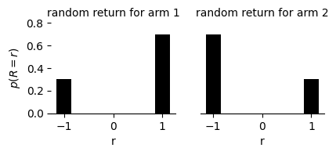
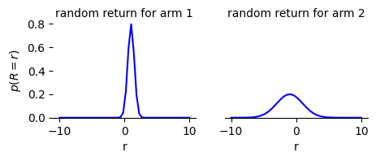
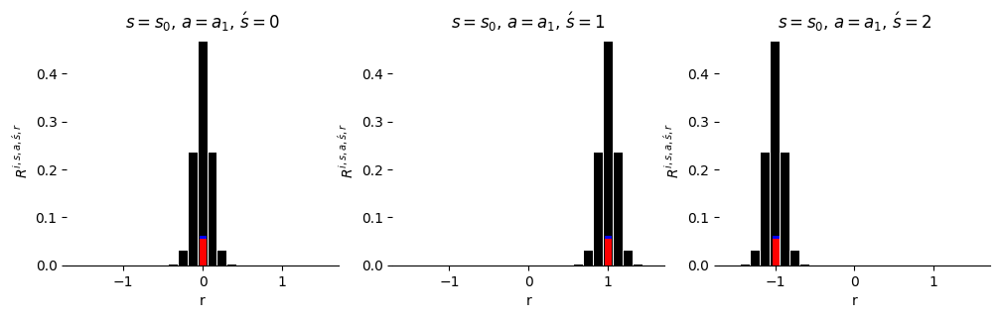
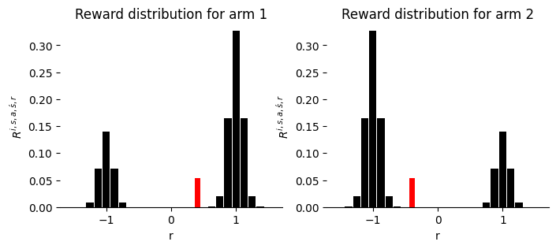
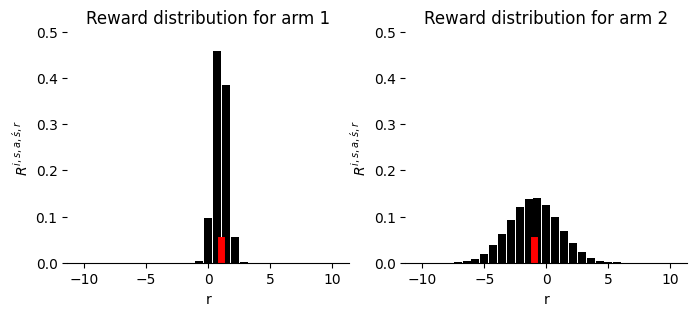
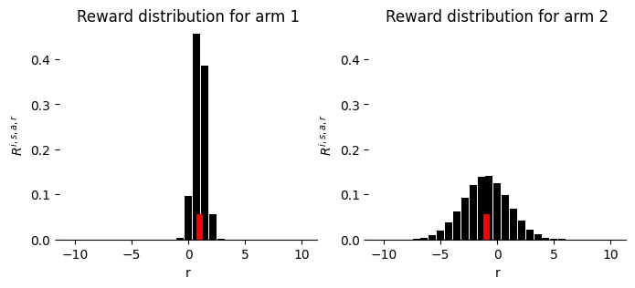
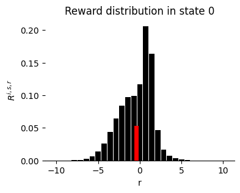
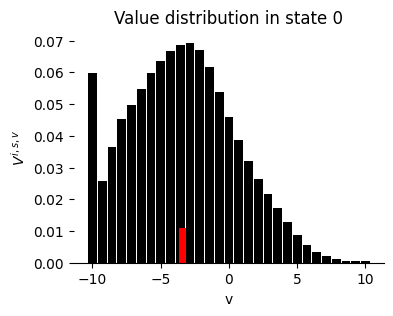
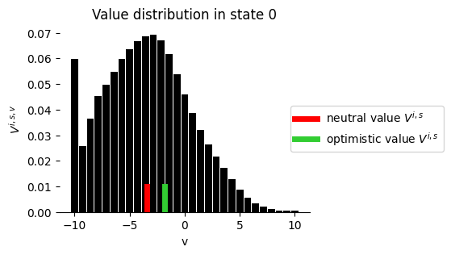

#| default_exp DDRLBase2 DDRL Base
In this section, we provide the base functions for Distributional Deterministic Reinforcement Learning.
First, we import everything necessary:
::: {#e26a1f7b .cell 0=‘h’ 1=‘i’ 2=‘d’ 3=‘e’}
# Imports for the nbdev development environment
import nbdev
from nbdev.showdoc import *
from fastcore.basics import patch:::
::: {#f8b78b81 .cell 0=‘e’ 1=‘x’ 2=‘p’ 3=‘o’ 4=‘r’ 5=‘t’}
import numpy as np
import scipy.stats as stats
import jax.numpy as jnp
from jax import jit
from functools import partial
import itertools as it
from pyCRLD.Agents.Base import abase
from pyCRLD.Utils.Helpers import *
from pyCRLD.Utils.Helpers import compute_stationarydistribution
from Methods import quantile, expectile, weights:::
# imports for this notebook
import matplotlib.pyplot as plt## Environment for testing
# actor-critic agent
from pyCRLD.Agents.StrategyActorCritic import stratAC
# 3-state two-armed bandit
from pyCRLD.Environments.TwoArmedBandit import TwoArmedBandit
# 1-state two-armed bandit
from pyCRLD.Environments.DistTwoArmedBanditOneState import DistTwoArmedBanditOneStateTest environment
We use a two-armed bandit as a test environment. To illustrate different ways of computing reward distributions, we introduce three types of two-armed bandits.
3-state two-armed bandit
In this task, an agent starts in the decision state, \(s_0\), and can choose between two options: * the first arm, \(a_1\), makes the agent transition to a rewarding state, \(s_1\), with probability \(0.7\), and to a punishing state with probability \(0.3\); * the second arm, \(a_2\), makes the agent transition to the rewarding state, \(s_1\), with probability \(0.3\), and to the punishing state with probability \(0.7\). In the rewarding state, the agent receives a return \(+1\). In the punishing state, it receives a return \(-1\).
Let’s implement this environment:
tab_3s = TwoArmedBandit(rew=1, pun=-1, pA=0.7, pB=0.3)
tab_3sTwoArmedBandit_1_-1_0.7_0.31-state two-armed bandit
This is the same task as above, but it has only one state and the return is represented as a discrete distribution.
xs = np.array([[-1, 1],
[-1, 1]])
ps = np.array([[0.3, 0.7],
[0.7, 0.3]])
tab_1s = DistTwoArmedBanditOneState(disttype='discrete', xs=xs, ps=ps)
tab_1s.Rdict{'x': array([[[[[-1., 1.]],
[[-1., 1.]]]]]),
'p': array([[[[[0.3, 0.7]],
[[0.7, 0.3]]]]])}This environment can be visualized as follows:
## Plot the return distributions
x = tab_1s.Rdict['x']
p = tab_1s.Rdict['p']
# Plot
fig, axes = plt.subplots(1, 2, figsize=(4.5, 1.5))
for a, ax in enumerate(axes):
ax.spines[['right', 'top', 'left']].set_visible(False)
ax.bar(x[0,0,a][0], p[0,0,a][0], width=0.3, color='k')
ax.set_xlabel("r")
ax.set_ylim([0,0.8])
ax.set_title("random return for arm "+str(a+1), fontsize=10)
axes[0].set_ylabel(r'$p(R = r)$')
axes[1].set_yticklabels([])
axes[1].set_yticks([])
Stochastic two-armed bandit with continuous return
In a stochastic two-armed bandit with continuous return, the random return follows a continuous distribution.
Let’s consider the following example, in which an agent can choose between two arms: * the first arm gives a random return that follows a Gaussian distribution, centered around \(\mu = 1\), with standard deviation \(\sigma = 0.5\) * the second arm gives a random return that follows a Gaussian distribution, centered around \(\mu = -1\), with standard deviation \(\sigma = 2.0\)
# Define environment
distA = ('norm', 1, 0.5) # first arm
distB = ('norm', -1, 2) # second arm
tab_cr = DistTwoArmedBanditOneState(distA=distA, distB=distB,
disttype="continuous")
tab_crDistTwoArmedBanditOneState_norm_1_norm_-1Now let’s plot the distribution of the random return for each arm.
## Plot the return distributions
x = np.linspace(-10, 10)
norm1 = stats.norm.pdf(x, 1, 0.5) # first arm
norm2 = stats.norm.pdf(x, -1, 2) # second arm
norms = [norm1, norm2]
# Plot
fig, axes = plt.subplots(1, 2, figsize=(5, 1.5))
for s_, ax in enumerate(axes):
ax.spines[['right', 'top', 'left']].set_visible(False)
ax.plot(x, norms[s_], color='blue')
ax.set_xlabel("r")
ax.set_ylim([0,0.8])
ax.set_title("random return for arm "+str(s_+1), fontsize=10)
axes[0].set_ylabel(r'$p(R = r)$')
axes[1].set_yticklabels([])
axes[1].set_yticks([])
Discretization and basic reward distribution \(R^{i,s,\boldsymbol{a},\acute s, r}\)
Discretization grid
We assume an agent is equipped with a number \(N_r\) of neurons, such that each neuron \(i \in [1, N_r]\) is sensitive to an amount of reward \(x_i\), with \(x_1\) the minimum amount of reward perceived and \(x_{N_{r}}\) the maximum amount, and for all \(i \in [1, N_r]\) \(x_i = x_1 + (i - 1) \frac{x_{N_r} - x_1}{N_r - 1}\).
The discretization grid is the set \({x_i, i \in [1, N_r]}\) of perceived amounts of rewards (also called “grid points”). We call “width” the difference \(\Delta x = (i - 1) \frac{x_{N_r} - x_1}{N_r - 1}\) between two consecutive grid points.
The discretization grid will be the support of all subsequent distributions.
::: {#b56ff4dc .cell 0=‘e’ 1=‘x’ 2=‘p’ 3=‘o’ 4=‘r’ 5=‘t’}
def compute_discretization_grid(Rmin, # Minimum reward perceived
Rmax, # Maximum reward perceived
Nr # Number of gridpoints
) -> tuple: # Gridpoints, Width
"""
Compute discretization grid (rewards neurons are sensitive to)
for base DDRL agent.
"""
gridpoints = np.linspace(Rmin, Rmax, Nr)
width = np.round(gridpoints[1] - gridpoints[0], 8)
return gridpoints, width:::
Basic reward distribution \(R^{i,s,\boldsymbol{a},\acute s, r}\)
Let us now consider a stochastic game with reward tensor \(\boldsymbol{R}\) and transition tensor \(\boldsymbol{T}\). For all \(x \in (x_j)_{j \in [1, N_r]}\), we define the reward distribution \(R^{i,s,\boldsymbol{a}, \acute s,r}\) for agent \(i\), current state \(s\), joint action \(\boldsymbol{a}\), and next state \(\acute s\), as: \[\begin{equation} R^{i,s,\boldsymbol{a}, \acute s,r} = \int_{r - \frac{\Delta x}{2}}^{r + \frac{\Delta x}{2}} \frac{1}{\sqrt{2 \pi \sigma^{2}}} \exp[-\frac{(y - R^{i,s,\boldsymbol{a},\acute s})^2}{2 \sigma^2}] dy. \end{equation}\]
Note that each \(R^{i,s,\boldsymbol{a},\acute s}\) is an entry of the reward tensor \(\boldsymbol{R}\). In other terms, for all \(r \in (x_j)_{j \in [1, N_r]}\), \(R^{i,s,\boldsymbol{a}, \acute s,r}\) is the area under the bell curve centered in \(R^{i,s,\boldsymbol{a},\acute s}\), taken between \(r - \frac{\Delta x}{2}\) and \(r + \frac{\Delta x}{2}\).
For environments with stochastic returns (such as in the stochastic two-armed bandit task), the entries of the reward tensor are themselves distributions.
If these distributions are continuous, we define \(F^{i,s,\boldsymbol{a},\acute s}(r)\) the cumulative distribution function of continuous reward distribution \({}^c R^{i,s,\boldsymbol{a},\acute s}(r)\). Then, we discretize as follows:
\[\begin{equation} R^{i,s,\boldsymbol{a}, \acute s,r} = \int_{r - \frac{\Delta x}{2}}^{r + \frac{\Delta x}{2}} F^{i,s,\boldsymbol{a},\acute s}(y) dy. \end{equation}\]
We define a dispatcher function, which associates keywords with corresponding distribution shapes, so that we can compute relevant cumulative distribution functions:
::: {#fa3aafe5 .cell 0=‘e’ 1=‘x’ 2=‘p’ 3=‘o’ 4=‘r’ 5=‘t’}
def dispatcher():
dispatcher={'norm':stats.norm, 'alpha':stats.alpha, 'beta':stats.beta,
'powerlaw':stats.powerlaw}
return dispatcher:::
Now we can compute the basic reward distribution for three cases: - deterministic returns (such as a two-armed bandit task with three states) - stochastic returns following continuous distributions (such as a stochastic two-armed bandit with continuous return) - stochastic returns following discrete distributions (such as a one-state two-armed bandit task).
::: {#45ec34f5 .cell 0=‘e’ 1=‘x’ 2=‘p’ 3=‘o’ 4=‘r’ 5=‘t’}
def compute_Risjasr(env, # The env object
Rmin, # minimum perceived reward
Rmax, # maximum perceived reward
nr, # The number of reward bins
discretization_sigma # Width of the discritization normal distribution
) -> np.ndarray: # Reward distribution
"""
Compute basic reward distribution Risjasr.
"""
# get the discretization grid
points, width = compute_discretization_grid(Rmin, Rmax, nr)
# init the reward distribution tensor
Risjasr = np.zeros(env.R.shape + (nr,)) # last dim is distrib
# go through the reward tensor of the environment
for index, _ in np.ndenumerate(env.R):
if env.disttype == 'continuous': # return follows continuous distrib
sigma = env.Rdict['scale'][index] # sd
loc = env.Rdict['loc'][index] # mean
dist = env.Rdict['dist'][index] # distribution shape
# choose the right distribution shape
disp = dispatcher()
func = disp[dist]
# compute discretized distribution
for r in range(nr):
if r==0: # first interval
prop = func.cdf(points[r]+width/2, loc, sigma)
elif r==nr-1: # last interval
prop = 1 - func.cdf(points[r]-width/2, loc, sigma)
else: # all other intervals
prop = func.cdf(points[r]+width/2, loc, sigma)\
- func.cdf(points[r]-width/2, loc, sigma)
Risjasr[index +(r,)] = prop
elif env.disttype == None: # return is deterministic
loc = env.R[index] # mean
sigma = discretization_sigma # sigma
func = stats.norm
# compute discretized distribution
for r in range(nr):
if r==0: # first interval
prop = func.cdf(points[r]+width/2, loc, sigma)
elif r==nr-1: # last interval
prop = 1 - func.cdf(points[r]-width/2, loc, sigma)
else: # all other intervals
prop = func.cdf(points[r]+width/2, loc, sigma)\
- func.cdf(points[r]-width/2, loc, sigma)
Risjasr[index +(r,)] = prop
else: # return follows discrete distribution
x = env.Rdict['x'][index] # values for which prob is non zero
p = env.Rdict['p'][index] # prob that return equals those values
sigma = discretization_sigma # discretization width
func = stats.norm
# compute discretized distribution
for i in range(len(x)):
for r in range(nr):
if r==0: # first interval
prop = p[i] * func.cdf(points[r]+width/2, x[i], sigma)
elif r==nr-1: # last interval
prop = p[i] * (1 - func.cdf(points[r]-width/2, x[i], sigma))
else: # all other intervals
prop = p[i] * (func.cdf(points[r]+width/2, x[i], sigma)\
- func.cdf(points[r]-width/2, x[i], sigma))
Risjasr[index +(r,)] += prop
return Risjasr:::
Here are the discretized distributions for the three different two-armed bandits:
- 3-state two-armed bandit
env = tab_3s
Rmin = -1.5
Rmax = 1.5
nr = 25
sigma = 0.1
gridpoints, width = compute_discretization_grid(Rmin, Rmax, nr)
Rr = compute_Risjasr(env, Rmin, Rmax, nr, sigma)# Plot reward distribution in each state for first arm
fig, axes = plt.subplots(1, 3, figsize=(12,3))
for s_, ax in enumerate(axes):
ax.spines[['right', 'top', 'left']].set_visible(False)
ax.bar(gridpoints, Rr[0,0,0,s_,:], width=0.9*width, color='k')
r = env.R[0,0,0,s_]
rm = np.dot(gridpoints, Rr[0,0,0,s_,:])
ax.plot([r, r], [0.0, 0.055], c='blue', lw=5)
ax.plot([rm, rm], [0.0, 0.05], c='red', lw=5)
ax.set_xlabel("r")
ax.set_ylabel(r"$R^{i,s,a,\acute s, r}$")
ax.set_title(r'$s=s_0$, $a=a_1$, $\acute s =$'+str(s_))
ax.set_ylim([0, np.max(Rr[:,:,:,s_])+0.01])
- 1-state two-armed bandit
env = tab_1s
Rmin = -1.5
Rmax = 1.5
nr = 25
sigma = 0.1
gridpoints, width = compute_discretization_grid(Rmin, Rmax, nr)
Rr = compute_Risjasr(env, Rmin, Rmax, nr, sigma)# Plot reward distribution for both arms
fig, axes = plt.subplots(1, 2, figsize=(8,3))
for a, ax in enumerate(axes):
ax.spines[['right', 'top', 'left']].set_visible(False)
ax.bar(gridpoints, Rr[0,0,a,0,:], width=0.9*width, color='k')
rm = np.dot(gridpoints, Rr[0,0,a,0,:])
ax.plot([rm, rm], [0.0, 0.05], c='red', lw=5)
ax.set_xlabel("r")
ax.set_ylabel(r"$R^{i,s,a,\acute s, r}$")
ax.set_title("Reward distribution for arm "+str(a+1))
ax.set_ylim([0, np.max(Rr[:,:,a,:])+0.01])
- Stochastic two-armed bandit with continuous return
env = tab_cr
Rmin = -10
Rmax = 10
nr = 29
sigma = 0.1
gridpoints, width = compute_discretization_grid(Rmin, Rmax, nr)
Rr = compute_Risjasr(env, Rmin, Rmax, nr, sigma)# Plot reward distribution for both arms
fig, axes = plt.subplots(1, 2, figsize=(8,3))
for a, ax in enumerate(axes):
ax.spines[['right', 'top', 'left']].set_visible(False)
ax.bar(gridpoints, Rr[0,0,a,0,:], width=0.9*width, color='k')
rm = np.dot(gridpoints, Rr[0,0,a,0,:])
ax.plot([rm, rm], [0.0, 0.05], c='red', lw=5)
ax.set_xlabel("r")
ax.set_ylabel(r"$R^{i,s,a,\acute s, r}$")
ax.set_title("Reward distribution for arm "+str(a+1))
ax.set_ylim([0, 0.5])
Smoothed Bellman Kronecker delta \(\delta^{i,v,r,\acute v}\)
In traditional, expected-value RL, the value of a state \(s\) for agent \(i\) is computed via the Bellman equation:
\[ V^{i,s} = (1 - \gamma^{i}) R^{i,s} + \gamma^{i} V^{i, \acute s} \] where \(V^{i,\acute s}\) is the value of the next state, \(\acute s\).
In distributional form, we want to compute the probability that (discretized) values \(r\), \(v\) and \(\acute v\) satisfy the Bellman equation \(v = (1-\gamma^i)r + \gamma^i \acute v\). To this end, we introduce the smoothed Bellman Kronecker delta, which also allows for some uncertainty about the categorization into different bins. This uncertainty is also modulated by the discretization standard deviation, \(\sigma\). Calling \(val(r,\acute v)\) the expression \((1-\gamma^i)r + \gamma^i \acute v\), \[\begin{equation} \delta^{i,v,r,\acute v} = \int_{v - \frac{w}{2}}^{v + \frac{w}{2}} \frac{1}{\sqrt{2 \pi \sigma^{2}}} \exp[-\frac{[y - val(r,\acute v)]^2}{2 \sigma^2}] dy. \end{equation}\]
The following function computes the Bellman Kronecker delta for given environment, minimum and maximum perceived rewards, number of neurons, and discount factors:
::: {#6949a828 .cell 0=‘e’ 1=‘x’ 2=‘p’ 3=‘o’ 4=‘r’ 5=‘t’}
# Smoothed Bellman Kronecker delta for Bellman equation
def compute_b_ivrv_(env, # env object
Rmin,
Rmax,
nr, # number of bins
discretization_sigma, # width of discretization normal distribution
gamma, # discount factor
pre # prefactor
) -> np.ndarray:
"""
Compute smoothed Bellman Kronecker delta b_ivrv_.
"""
points, width = compute_discretization_grid(Rmin, Rmax, nr)
sigma = discretization_sigma
b_ivrv_ = np.ones((env.N, nr, nr, nr)) * -1
for v in range(nr):
for r in range(nr):
for v_ in range(nr):
valv = pre * points[r] + gamma * points[v_]
# gaussian distribution around valq with std `sig`
if v==0:
prop = stats.norm.cdf(points[v]+width/2, valv, sigma)
elif v==nr-1: # last intervall
prop = 1 - stats.norm.cdf(points[v]-width/2, valv, sigma)
else:
prop = stats.norm.cdf(points[v]+width/2,
valv, sigma) - stats.norm.cdf(points[v]-width/2, valv, sigma)
b_ivrv_[:,v,r,v_] = prop
return b_ivrv_:::
DDRL Base class
Now we can define the DDRL Base class:
::: {#ab2883ef .cell 0=‘e’ 1=‘x’ 2=‘p’ 3=‘o’ 4=‘r’ 5=‘t’}
class DDRLBase(abase):
"""
Base class for Distributional Deterministic Reinforcement Learning
in strategy space.
"""
def __init__(self,
env, # An environment object
nr_reward_bins=8, # The number of bins to resolve rewards
discretization_sigma=0.1, # standard div for reward discretization
learning_rates=0.1, # agents' learning rates
discount_factors=0.0, # agents' discount factors
Rmin=None, # minimum perceived reward
Rmax=None, # maximum perceived reward
method='mean', # biasing method
tau=0.5, # tau for expectile and quantile methods
wU=1., # upper weight for weights method
choice_intensities=1.0, # agents' choice intensities
opteinsum=True, # optimize einsum functions
use_prefactor=False, # scale values with rewards
**kwargs):
self.env = env
Tt = env.T; assert np.allclose(Tt.sum(-1), 1)
Rt = env.R
super().__init__(Tt, Rt, discount_factors, True, opteinsum)
self.F = jnp.array(env.F)
# learning rates
self.alpha = make_variable_vector(learning_rates, self.N)
# intensity of choice
self.beta = make_variable_vector(choice_intensities, self.N)
# discount factors
self.gamma = make_variable_vector(discount_factors, self.N)
# pre-factor
self.pre = 1 - self.gamma if use_prefactor else jnp.ones(self.N)
# number of reward bins
self.nr = nr_reward_bins
# reward discretization deviation
self.discsig = discretization_sigma
# Rmin and Rmax
if Rmin==None:
self.Rmin = env.R.min()
else:
self.Rmin = Rmin
if Rmax==None:
self.Rmax = env.R.max()
else:
self.Rmax = Rmax
# discretization grid
disc_grid = compute_discretization_grid(self.Rmin, self.Rmax, self.nr)
self.gridpoints = disc_grid[0]
self.gridwidth = disc_grid[1]
# reward tensor distribution
self.Rr = compute_Risjasr(env, self.Rmin, self.Rmax, self.nr, self.discsig)
# Bellman ivrv_
self.b_ivrv_ = compute_b_ivrv_(env, self.Rmin, self.Rmax, self.nr, self.discsig, self.gamma, self.pre)
# method
self.method = method
# value for quantile or expectile
self.tau = tau
# weights
self.wU = wU:::
We consider the following agent-environment interface: * 1 agent with learning rate \(\alpha=0.1\), discount factor \(\gamma=0.9\), choice intensity \(\beta=4\); * playing the aforementioned stochastic two-armed bandit task with continuous return.
aei = DDRLBase(tab_cr, # environment
nr_reward_bins=29,
discretization_sigma=0.1,
learning_rates=0.1,
discount_factors=0.9,
choice_intensities=4.,
Rmin=-10,
Rmax=10)No GPU/TPU found, falling back to CPU. (Set TF_CPP_MIN_LOG_LEVEL=0 and rerun for more info.)Computing distributions in DDRL
Now we can compute and plot all the distributions we need.
Reward distributions \(R^{i,s,a^i,r}\) and \(R^{i,s,r}\)
The basic reward distribution can be averaged over joint actions \(\boldsymbol{a}\) and next states \(s'\). We call \(R^{i,s,a^i,r}\) the reward distribution for agent \(i\) taking action \(a^i\) in state \(s\), averaged over transitions to the next state \(\acute s\), and over other agents’ actions \(\boldsymbol{a}^{-i}\): \[\begin{equation} R^{i,s,a^i,r} = \sum_{\acute s} \sum_{\boldsymbol{a}^{-i}} \prod_{-i}\boldsymbol{X}^{-i, s, \boldsymbol{a}^{-i}} T^{s,a^i\boldsymbol{a}^{-i},\acute s} R^{i,s,a^i\boldsymbol{a}^{-i},\acute s,r}. \end{equation}\]
The reward distribution \(R^{i,s,r}\) denotes the probability that agent \(i\) receives reward \(r\) in state \(s\). It is averaged over joint actions \(\boldsymbol{a}\) (including agent \(i\)’s) and next states \(s'\): \[\begin{equation} R^{i,s,r} = \sum_{\acute s} \sum_{\boldsymbol{a}} \prod_{j}\boldsymbol{X}^{j, s, \boldsymbol{a}}\cdot T^{s,\boldsymbol{a},\acute s} \cdot R^{i,s,\boldsymbol{a},\acute s,r}. \end{equation}\]
::: {#7637e64c .cell 0=‘e’ 1=‘x’ 2=‘p’ 3=‘o’ 4=‘r’ 5=‘t’}
@partial(jit, static_argnums=0)
def Risar(self:DDRLBase,
Xisa
) -> jnp.ndarray:
i = 0; a = 1; s = 2; s_ = 3; r = 4 # Variables
j2k = list(range(5, 5+self.N-1)) # other agents
b2d = list(range(5+self.N-1, 5+self.N-1 + self.N)) # all actions
e2f = list(range(4+2*self.N, 4+2*self.N + self.N-1)) # all other acts
Risjasr = self.Rr
sumsis = [[j2k[l], s, e2f[l]] for l in range(self.N-1)] # sum inds
otherX = list(it.chain(*zip((self.N-1)*[Xisa], sumsis)))
args = [self.Omega, [i]+j2k+[a]+b2d+e2f] + otherX\
+ [self.T, [s]+b2d+[s_], Risjasr, [i, s]+b2d+[s_, r],
[i, s, a, r]]
Risar = jnp.einsum(*args, optimize=self.opti)
return Risar
DDRLBase.Risar = Risar:::
We assume the agent chooses arm 1 with probability 0.3, and arm 2 with probability 0.7:
X = np.ones((1,1,2)) * 0.3
X[:,:,1] = 1 - X[:,:,0]Rr = aei.Risar(X)
# Plot reward distribution Risar for both arms
fig, axes = plt.subplots(1, 2, figsize=(8,3))
for a, ax in enumerate(axes):
ax.spines[['right', 'top', 'left']].set_visible(False)
ax.bar(gridpoints, Rr[0,0,a,:], width=0.9*width, color='k')
rm = np.dot(gridpoints, Rr[0,0,a,:])
ax.plot([rm, rm], [0.0, 0.05], c='red', lw=5)
ax.set_xlabel("r")
ax.set_ylabel(r"$R^{i,s,a,r}$")
ax.set_title("Reward distribution for arm "+str(a+1))
ax.set_ylim([0, np.max(Rr[0,0,:,:]+0.01)])
::: {#d91ae343 .cell 0=‘e’ 1=‘x’ 2=‘p’ 3=‘o’ 4=‘r’ 5=‘t’}
@partial(jit, static_argnums=0)
def Risr(self:DDRLBase, Xisa):
"""
Compute reward distribution Risr joint strategy `Xisa`.
"""
i = 0; s = 1; sprim = 2; r=3; b2d = list(range(4, 4+self.N))
Risjasr = jnp.array(self.Rr)
X4einsum = list(it.chain(*zip(Xisa,
[[s, b2d[a]] for a in range(self.N)])))
args = X4einsum + [self.T, [s]+b2d+[sprim],
Risjasr, [i, s]+b2d+[sprim, r], [i, s, r]]
return jnp.einsum(*args, optimize=self.opti)
DDRLBase.Risr= Risr # Monkey-patching - possibly problematic?:::
Rr = aei.Risr(X)
# Plot reward distribution Risar for both arms
fig, ax = plt.subplots(1, 1, figsize=(4,3))
ax.spines[['right', 'top', 'left']].set_visible(False)
ax.bar(gridpoints, Rr[0,0,:], width=0.9*width, color='k')
rm = np.dot(gridpoints, Rr[0,0,:])
ax.plot([rm, rm], [0.0, 0.05], c='red', lw=5)
ax.set_xlabel("r")
ax.set_ylabel(r"$R^{i,s,r}$")
ax.set_title("Reward distribution in state 0")Text(0.5, 1.0, 'Reward distribution in state 0')
Value distribution \(V^{i,s,v}\) and biased value
We now calculate the value distribution \(V^{i,s,v}\). The probability that the random value \(V\) equals \(v\) for agent \(i\) in state \(s\) is a conjunction of the following probabilities: * that random reward \(R\) for agent \(i\) in state \(s\) equals \(r\); * that there is a transition from state \(s\) to state \(\acute s\); * that \(v\), \(r\) and \(\acute v\) conform to the above Bellman equation.
The probability that there is a transition from any state \(s\) to any state \(\acute s\) is given by the environment’s stationary distribution, \(\bar T^{s,\acute s}\).
Therefore, \[\begin{equation} V^{i,s,v} = \sum_{r, \acute v, \acute s} \delta^{i,v,r,\acute v} R^{i,s,r} \bar T^{s,\acute s} V^{i, \acute s, \acute v}. \end{equation}\]
We now define \[\begin{equation} M^{i,s,v,\acute s,\acute v} = \sum_r \delta^{i,v,r,\acute v} R^{i,s,r} \bar T^{s\acute s}. \end{equation}\]
Thus, \[\begin{equation} V^{i,s,v} = \sum_{\acute v, \acute s} M^{i,s,v,\acute s,\acute v} V^{i, \acute s, \acute v} \end{equation}\]
We can combine the indices \(s \times v = w\) and \(\acute s \times \acute v = \acute w\). Now, \(V^{i,w} = \sum_{\acute w} M^{i, w, \acute w} V^{i,\acute w}\). This makes it apparent that the return distribution should be found in the eigenvalues of the matrix \(M\).
The following function computes the matrix \(M\):
::: {#b54c8d7b .cell 0=‘e’ 1=‘x’ 2=‘p’ 3=‘o’ 4=‘r’ 5=‘t’}
@partial(jit, static_argnums=0)
def M_iww_(self:DDRLBase,
Xisa # Behavior profiles
) -> jnp.ndarray:
"""
Compute matrix M_iww_ given joint strategy `Xisa`.
"""
Tss = self.Tss(Xisa)
Risr = self.Risr(Xisa)
b_ivrv_ = self.b_ivrv_
i=0; v=1; r=2; v_=3; s=4; s_=5
M = jnp.einsum(b_ivrv_, [i,v,r,v_], Risr, [i, s, r], Tss,
[s, s_], [i, s, v_, s_, v], optimize=self.opti)
jnp.allclose(M.sum((-2,-1)), 1.0)
return M
DDRLBase.M_iww_ = M_iww_ :::
Now, we can compute the value distribution \(V^{i,s,v}\):
::: {#20b30338 .cell 0=‘e’ 1=‘x’ 2=‘p’ 3=‘o’ 4=‘r’ 5=‘t’}
@partial(jit, static_argnums=0)
def Visv(self:DDRLBase,
Xisa # Behavior profiles
) -> jnp.ndarray:
"""
Compute value distribution Visv given joint strategy `Xisa`.
"""
M_iww_ = self.M_iww_(Xisa)
Visv = jnp.ones((self.N, self.Z, self.nr)) * -1
for i in range(self.N):
mat = M_iww_[i].reshape(self.Z*self.nr, self.Z*self.nr)
_pS = compute_stationarydistribution(mat)
ix = jnp.max(jnp.where(_pS.mean(0)!=-10, jnp.arange(_pS.shape[0]), -1))
pS = _pS[:, ix]
Ps = pS.reshape(self.Z, self.nr).sum(-1)
# assert jnp.allclose(self.Ps(Xisa), Ps, atol=1e-4)
VIsv = pS.reshape(self.Z, self.nr) / pS.reshape(self.Z, self.nr).sum(-1, keepdims=True)
Visv = Visv.at[i, ...].set(VIsv)
# Visv[i, ...] = VIsv
return Visv
DDRLBase.Visv = Visv :::
Here is an example with the above agent-environment interface:
Vv = aei.Visv(X)
# Plot reward distribution Risar for both arms
fig, ax = plt.subplots(1, 1, figsize=(4,3))
ax.spines[['right', 'top', 'left']].set_visible(False)
ax.bar(gridpoints, Vv[0,0,:], width=0.9*width, color='k')
rm = np.dot(gridpoints, Vv[0,0,:])
ax.plot([rm, rm], [0.0, 0.01], c='red', lw=5)
ax.set_xlabel("v")
ax.set_ylabel(r"$V^{i,s,v}$")
ax.set_title("Value distribution in state 0")Text(0.5, 1.0, 'Value distribution in state 0')
For a neutral agent, the (non-distributional) state value is the mean of the value distribution. But a biased agent will get an optimistic or a pessimistic estimate of this distribution. To obtain this biased estimate, we can apply the quantile, expectile, or weights method to the value distribution. To know more about these methods, please refer to the Biasing Methods section.
::: {#38eaa5ba .cell 0=‘e’ 1=‘x’ 2=‘p’ 3=‘o’ 4=‘r’ 5=‘t’}
@partial(jit, static_argnums=0)
def Vis(self:DDRLBase,
Xisa # Behavior profiles
) -> jnp.ndarray:
"""
Compute value estimate Vis given joint strategy `Xisa`.
"""
Visv = self.Visv(Xisa)
gpoints = jnp.ones((self.nr)) * -1
gpoints = gpoints.at[:].set(self.gridpoints)
Vism = jnp.einsum('ijk,k->ij', Visv, gpoints) # mean of the distrib
if self.method=='mean': # take mean
Vis = Vism
elif self.method=='quantile': # use quantile
Vis = quantile(self.tau, Visv, gpoints)
elif self.method=='expectile': # use expectile
Vis = expectile(self.tau, Visv, gpoints)
elif self.method=='weights': # use weights
w = jnp.ones((self.N, self.Z, len(self.gridpoints)))
n = jnp.newaxis
upper = self.gridpoints[n,n,:] >= Vism[:,:,n]
upper = upper * (self.wU - 1)
w = w + upper
wVisv = weights(w, Visv, gpoints)
Vis = jnp.einsum('ijk,k->ij', wVisv, gpoints) # take the new distrib's mean
return Vis
DDRLBase.Vis = Vis # Monkey-patching - possibly problematic?:::
Below, we plot the value distribution, the neutral value (= its mean), and an optimistic estimate implemented with the weights method.
# Defining an optimistic agent
aei_opt = DDRLBase(tab_cr, # environment
nr_reward_bins=29,
discretization_sigma=0.1,
learning_rates=0.1,
discount_factors=0.9,
choice_intensities=4.,
method="weights",
wU=3.,
Rmin=-10,
Rmax=10)Vv = aei.Visv(X)
vm = aei.Vis(X)[0,0]
vm_opt = aei_opt.Vis(X)[0,0]
# Plot value distribution Visv
fig, ax = plt.subplots(1, 1, figsize=(4,3))
ax.spines[['right', 'top', 'left']].set_visible(False)
ax.bar(gridpoints, Vv[0,0,:], width=0.9*width, color='k')
ax.plot([vm, vm], [0.0, 0.01], c='red', lw=5, label="neutral value "+r'$V^{i,s}$')
ax.plot([vm_opt, vm_opt], [0.0, 0.01], c='limegreen',
lw=5, label="optimistic value "+r'$V^{i,s}$')
ax.set_xlabel("v")
ax.set_ylabel(r"$V^{i,s,v}$")
ax.legend(bbox_to_anchor=(0.9, 0.6))
ax.set_title("Value distribution in state 0")Text(0.5, 1.0, 'Value distribution in state 0')
Additional functions
The functions below help compute the agents’ learning trajectories in strategy space. The first one performs a learning step, while the second one performs a reverse step.
::: {#e8c37faf .cell 0=‘e’ 1=‘x’ 2=‘p’ 3=‘o’ 4=‘r’ 5=‘t’}
@partial(jit, static_argnums=0)
def step(self:DDRLBase,
Xisa, # Behavior profiles
) -> jnp.ndarray:
"""
Performs a learning step along the reward-prediction/temporal-difference error
in strategy space, given joint strategy `Xisa`.
"""
TDe = self.TDerror(Xisa)
n = jnp.newaxis
XexpaTDe = Xisa * jnp.exp(self.alpha[:,n,n] * TDe)
return XexpaTDe / XexpaTDe.sum(-1, keepdims=True), TDe
DDRLBase.step = step:::
::: {#d919d7de .cell 0=‘e’ 1=‘x’ 2=‘p’ 3=‘o’ 4=‘r’ 5=‘t’}
@partial(jit, static_argnums=0)
def reverse_step(self:DDRLBase,
Xisa, # Behavior profiles
) -> jnp.ndarray:
"""
Performs a reverse learning step along the reward-prediction/temporal-difference error
in strategy space, given joint strategy `Xisa`.
"""
TDe = self.TDerror(Xisa)
n = jnp.newaxis
XexpaTDe = Xisa * jnp.exp(self.alpha[:,n,n] * -TDe)
return XexpaTDe / XexpaTDe.sum(-1, keepdims=True), TDe
DDRLBase.reverse_step = reverse_step:::
::: {#e61c73fe .cell 0=‘h’ 1=‘i’ 2=‘d’ 3=‘e’}
nbdev.export.nb_export("02.01_DDRLBase.ipynb", ""):::